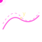
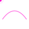
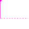
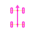

Agricultural Robot Simulator
A high-fidelity closed-loop simulation environment for 4-Wheel Steering autonomous vehicles navigating unstructured agricultural terrains — slip, mud, slopes and all.
// Architecture
Closed-Loop Pipeline
Every simulation tick flows through four stages, from raw GPS waypoints to physical wheel forces — and back through state observers.
// Modules
What's Inside
Seven self-contained modules, each solving a distinct challenge of autonomous navigation on real agricultural terrain.

Defines the simulator's architecture, scope, and physical foundations. Introduces the closed-loop pipeline from raw GPS waypoints to steering commands, establishes the Extended Bicycle Model, and lists the key geometric and inertial parameters of the vehicle.

Converts raw RTK-GPS waypoints into smooth, derivable trajectories. Finds the robot's closest point on the path, computes lateral and heading errors in the Frenet-Serret frame, and anticipates upcoming curvature for feedforward control.

Establishes the complete kinematic and dynamic model in the moving reference frame. Handles tangent singularities, angular wrapping, and first-order actuator delay modeling via state-space representation.
Simulates a full rigid-body 4-wheel vehicle. Implements the extended bicycle model, Pacejka-inspired lateral tire force generation, and Euler integration for real-time state propagation under non-linear terrain conditions.

Tire slip angles can't be measured without prohibitively expensive sensors. Three observer architectures — Kinematic Inversion, Luenberger and Lyapunov-based Adaptive Observer — reconstruct \(\beta_F\) and \(\beta_R\) in real-time from available measurements.

Three levels of control sophistication for the primary steering actuator: a baseline PD, a non-linear Exact Linearization via Backstepping, and a predictive GPC layer that compensates for hydraulic actuator lag.

The rear axle is an active contributor: counter-phase for tight headland turns, in-phase for crab steering on slopes, and quadratic curvature-based resolution for heading stabilization without disturbing lateral tracking.
// Control Strategies
From PD to Predictive Non-Linear
The simulator stacks four control laws of increasing sophistication, letting you benchmark each against real agricultural constraints — curvature, slip, actuator lag — in the same environment.
- PD Controller Baseline linear proportional-derivative. Fast to tune, blind to curvature and slip.
- Exact Linearization — Backstepping Transforms the non-linear kinematic model into a linear chained integrator system for perfect geometric tracking.
- Predictive Feedforward (GPC) Predicts future robot position over a planning horizon to cancel phase lag from actuator inertia.
- Rear Axle Quadratic Law Solves a curvature-dependent second-order equation to decouple lateral error from heading error.